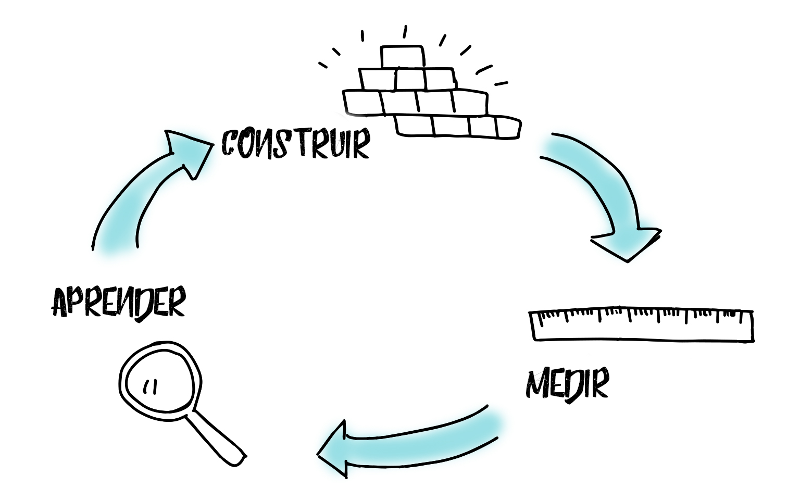

No-code - Tendência ou modinha
Criei uma enquete justamente com esse título e primeiramente agradeço as pessoas que responderam e isso me incentivou a escrever esse pequeno artigo.
Percebi que as opiniões estão divididas porém Tendência está em destaque.
Antes de mais nada quero dizer que tudo que eu escrever aqui é MINHA opinião, que respeito as opiniões e que também posso mudar a minha. Aprendi a analisar conteúdos com outros olhos e isso tem me libertado… mas sem mimi vamos ao artigo.
Sim, acredito que no-code seja tendência e vou procurar mostrar nessas linhas porque acredito nisso e porque mudei minha opinião que a tempos atrás era que isso não passava de mais uma modinha.
Desde quando ouvi sobre o tema eu não via motivos para o No-code vingar e até substituir o code e se perpetuar. Para isso tive que procurar entender o motivo de se usar no-code e foi justamente ai que mudei de opinião.
Nos dias atuais se fala muito de Ágil, a visão de Startup tem dominado a cabeça das pessoas e dos empreendimentos. O conceito de FAÇA RÁPIDO, ERRE RÁPIDO e CONCERTE RÁPIDO foi a chave que virou minha opinião.

Imagem: http://euheroi.com.br/a-startup-enxuta/
Com base na imagem acima, imagine o seguinte cenário.
Um empreendedor, que tem uma excelente ideia e precisa de um aplicativo para que seu produto. Agora imagine que ele está na fase inicial e precisa testar, precisa medir e assim seguir para a fase de aprender e ver se sua hipótese faz sentido e claro o que precisa ser mudado.
Então ele vai contratar desenvolvedores para fazer o aplicativo para ele, claro com qualidade e depois de um tempo, supomos que em 1 mês, o que acho relativamente pouco pois programadores não fazem milagres, ele termina e seus “cobaias” começam a testar.
Nessa fase ele descobre que mais da metade do que foi feito não serviu de nada, ainda bem, pois da tempo de ajustar. Legal, ele muda a estratégia com base no que aprendeu, vai lá e passa para o programador as alterações e mais um período se levou para entrar novamente no ciclo de Medir, Aprender e Construir.
Bom, esse tempo é suficiente para que alguém, um outro empreendedor com uma ideia igual ou semelhante saia na frente, justamente porque no que tange a desenvolvimento usou o no-code, ele desenvolveu rápido, com qualidade e ganhou tempo.
Esse período de construção pode ser reduzido e muito com o no-code, sem dúvida o que é feito em meses pode ser feito em 1 mês ou até menos. Esse tempo que se ganha pode ser decisivo e até crucial na decisão do uso do no-code e na validação do produto.
Mas Acácio você disse que no-code não vai substituir o code e até agora só disse que vale a pena usar o no-code e ai que explico.
Um dia, não distante, quando esse ciclo realmente tiver sido concluído (em partes porque a evolução e a melhoria é constante) e produto/ideia firmado o empreendedor vai precisar do code, de uma estrutura grande, escalável e etc.
Ai que o code e seus desenvolvedores entram, vai ser preciso, não tem escolha.
Se dizem que no-code vai substituir o code ai descordo, na minha opinião é balela, até porque as plataformas no-code são feitas com códigos, seria hipocrisia dizer que no-code vai substituir o code.
Outro detalhe que chamou minha atenção foi que a Microsoft lançou o Power Apps, a Oracle lançou o APEX, TOTVS lancou o TOTVS Fluig, Salesforce o Lightning, Google comprando AppSheet e AWS lançando o Honeycode, será que esses gigantes da Tecnologia e inovação estão dando tiro nós próprios pés?
Se você leu até aqui fico imensamente grato e peço que compartilhe com seu colega ou equipe para que possamos discutir esse tema tão bacana e polêmico.